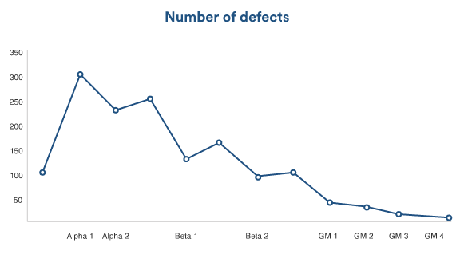
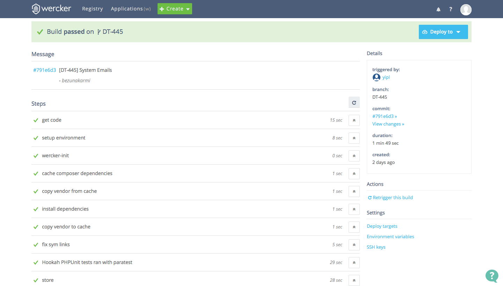

How we use unit testing to tackle technical debt
Feb 25, 2016About Me
- Sumit Chhetri
- Senior Software Engineer
- YoungInnovations Pvt. Ltd
Outline
- Introduction to Technical Debt
- Intorduction to Unit Testing
- Unit Testing and Agile
- How Agile and Unit Testing tackles Technical Debt
- Automated Testing And Continuous Integration (CI)
Technical Debt
- Any workaround, temporary fix, TODO, unmerged branch, untested code, refactoring you postpone is considered as technical debt.
Technical Debt
Traditional software programs have a phase-based approach to development: feature development, alpha, beta, and golden master (GM).

source : https://www.atlassian.com
Phase Based Approach
Each release begins with a phase where new features are built, and (ideally) old issues are dealt with (does it??).
Phase Based Approach
The development cycle reaches "alpha" when each feature is implemented and ready for testing.
Phase Based Approach
Beta hits when enough bugs have been fixed to enable customer feedback.
Phase Based Approach
Unfortunately, while the team is busy trying to fix enough bugs to reach beta, new bugs appear.
It's a chronic case of whack-a-mole: fix one bug, and two more pop up.
source : http://makeagif.com/dkjuuc
Phase Based Approach
Finally, the release hits the golden master milestone when there are zero open bugs.
"Zero open bugs" is usually achieved by fixing some known issues, and deferring the rest (most?) to the next release.
Phase Based Approach
As the bug count grows, tackling it becomes increasingly painful–resulting in a vicious death-spiral of technical debt.
Technical Debt
You know that you have to re-pay the debt, right!!!
But...
How you sound when refusing to tackle technical debt.
source : https://twitter.com/carnage4life
Technical Debt
And the result!!!
source : http://www.ruthmalan.com
Technical Debt
When we finally decide to repay the technical debt...
Our reactions...
 source : http://devopsreactions.tumblr.com/
source : http://devopsreactions.tumblr.com/
Testing
- It is a measure to identify if the actual output of the system is deviated from the desired output.
- It is just an act of running through our system to check if any bug exists.
- We can manually test the system or automate it.
Test Pyramid

source : http://martinfowler.com
Unit Testing
- Unit testing is testing a small, independent unit of a system.
- The unit is usually a small piece of code—for example, a single function.
- The unit test is itself a function that test another function and gives a pass/fail result.
- Example, testing an add(number1, number2) function.
Benefits of Unit Testing
- It is automated.
- Identify as many problems in development stage.
- Test the code in repeatable fashion with every change of code.
- This makes developers directly responsible for producing working code, even before it reaches the quality assurance team.
- It is database independent, minimal or no filesystem dependent.
- It is very fast.
Unit Testing And Agile
I think you can not be truly agile without unit testing.
Two of the Principles behind Agile Manifesto
- Welcome changing requirements, even late in development. Agile processes harness change for the customer's competitive advantage.
- Deliver working software frequently, from a couple of weeks to a couple of months, with a preference to the shorter timescale.
Unit Testing And Agile
Unit Test supports the Agile Principles
- Unit testing allows you to make code changes while remaining confident that they will not break existing functionality and that the major part of new functionality will work on first delivery.
- This enables frequent, timely delivery of working software.
Tackle Technical Debt with Agile and Unit Testing
source : http://stancalau.ro
Tackle Technical Debt with Agile and Unit Testing
- Agile follow iterative development approach so the team can maintain a consistent level quality release after release.
- If a feature isn't complete, it doesn't ship.
- Agile teams define "complete" as ready to release, which means developers don't move on to the next story or feature until their current item is practically in customers' hands.
- The master branch of the code base is always ready to ship.
Tackle Technical Debt with Agile and Unit Testing
- New features begin their lives on a feature branch containing code for the feature itself, plus it's automated unit tests.
- Once the feature is complete, and the automated unit tests pass, the branch can then be merged up into master.
- Because the quality bar is always fixed (and fixed high), technical debt stays under control.
"Having tests but no CI is like having a sword but letting it rot”- Geshan Manandhar
Automated Testing And Continuous Integration (CI)
- A development practice that enables developers to integrate code several times a day.
- It builds the software at each push and also runs the automated tests.
- It allows teams to detect problems early.
- The goal is to provide rapid feedback incase a defect is introduced.
- If the software builds successfully and all the test passes, the code it integrated to the master branch.
- It ensures on a continuous basis that you have a working product.
Wercker CI screenshot :
Some CI servers
Conclusion
The longer bugs linger, the more painful they are to fix.
Remember, technical debt is a reality for all software teams. Nobody avoids it entirely, the main thing is to keep it from being out of control.
Like with every kind of debt, technical debt should also be dealt with in time, and using agile and unit testing is likey the way, you want to deal with it.
source : http://www.allinalldetails.com
Some tips on writing testable code
- Follow Single Responsibility Principle
- Write expressive code. One should be able to understand the behaviour of the method by it's name and not have to read the whole method.
- Use Dependency Injection. It helps in making the classes loosely coupled.
- Do not use non-deterministic behaviour in your code. It makes the code untestable. Like, using date/time function in the method.
- Write clean code. Go through clean-code presentation to read more on how to write clean and testable code.